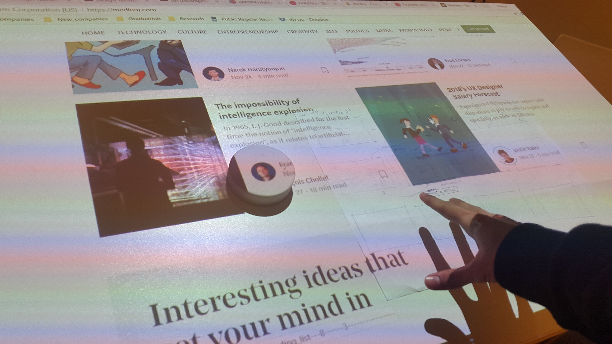

Storytelling Refined

Designing the experience and framework for interactive storytelling and presentations via objects on the White table.
Current WhiteTable
The goal was to improve the overall experience of the WhiteTable to tell stories and improving the underlying technology.
Exploring Interactions
A lot of trials and tests were done to find seamless interactions with the object and content to present.
Object_Tracking (ML)

To have a scalable solution, I made a camera detection system to track objects real-time, via ML(using Python) .
Tracking Via Depth
To increase robustness and reliability , a depth tracking system (SR300) was programmed (in C++) to cluster objects real-time.
Final Prototype
Final Prototype showing depth tracking of the object combined with projection mapping.
❮
❯